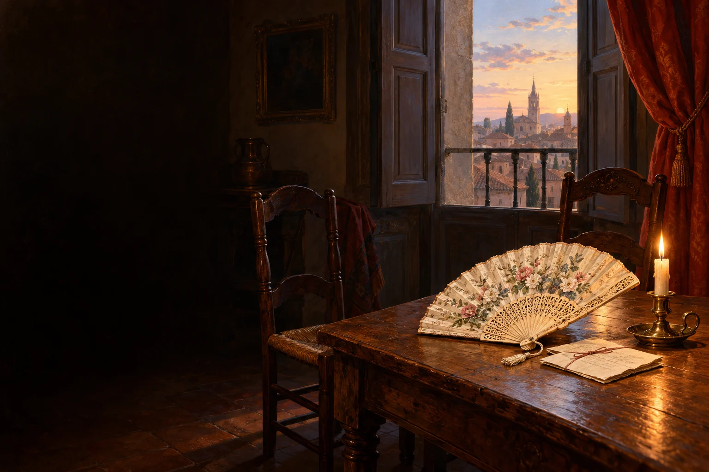
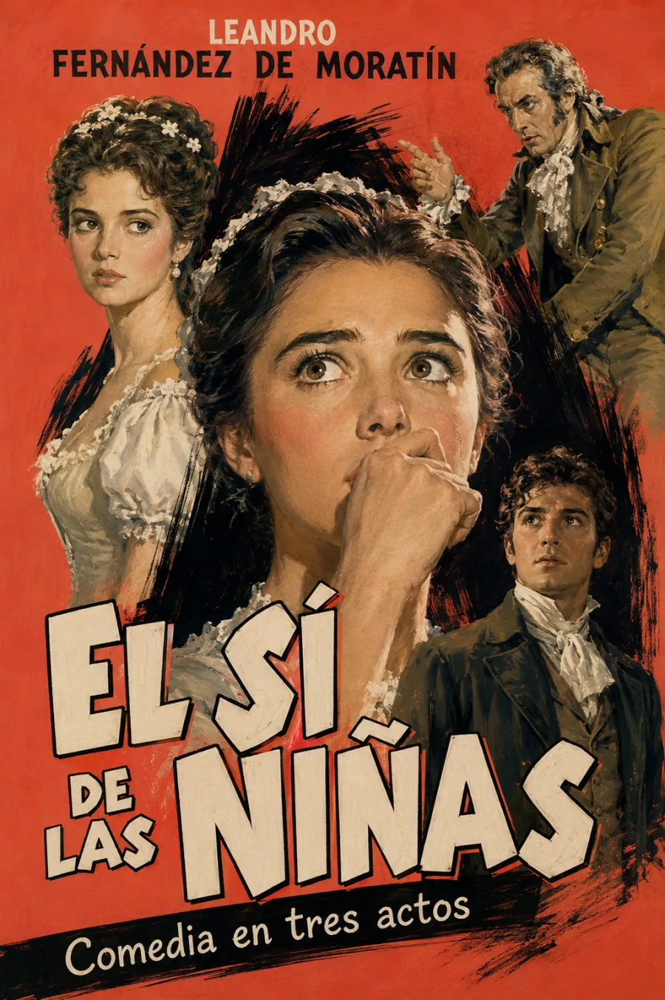

Audiolibros · Tercera Ola · Teatro
Leandro Fernández de Moratín · Estreno: 1806
Que el sí pueda ser una elección.
Una posada, una carta y una verdad callada.
La obediencia aprendida se enfrenta
al derecho de decir lo que se siente.

El derecho a decir sí — o no.
Volumen

En una posada de Alcalá de Henares, doña Francisca se encuentra entre el matrimonio que su madre dispone con don Diego y el afecto que siente por don Carlos. El parentesco entre ambos hombres vuelve más delicado un conflicto en el que la joven ha aprendido a callar sus deseos.
Un consentimiento no es libre si la educación solo permite obedecer.
Moratín concentra el enredo en tres actos y convierte la comedia en una crítica de las imposiciones familiares y de una educación que premia la disimulación. La resolución exige escuchar lo que la autoridad había dado por decidido.
Estrenada el 24 de enero de 1806 en el Teatro de la Cruz, Madrid. Texto de referencia: Biblioteca Virtual Miguel de Cervantes, El sí de las niñas. El desenlace pertenece al acto tercero; no constituye un cuarto acto. La cabecera es una interpretación artística del ambiente de la obra.
Acto primero
Acto segundo
Acto tercero
Las grabaciones se incorporarán por acto. Los puntos de inicio se ajustarán cuando esté disponible el audio.
4.8/5